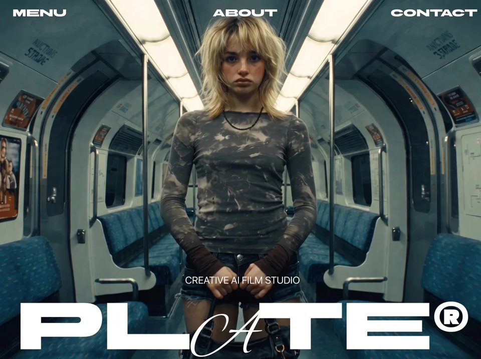

AI Future Studio
Creativecreativeyilai-ai 公开页面
收录时间：2026-08-17正文：53,128 字符

本地预览图 · jpeg
完整提示词
<!DOCTYPE html>
<html lang="en">
<head>
<meta charset="utf-8">
<meta name="viewport" content="width=device-width, initial-scale=1, viewport-fit=cover">
<title>PLATE</title>
<meta name="description" content="PLATE — scroll-scrubbed continuous plate (standalone)">
<!--
Standalone recreation of the current PLATE site.
One continuous MP4 across three wipe layers, 1s wipe lead, Clients counter only.
Open this file directly, or serve any static server from the project root.
-->
<script>document.documentElement.classList.add('js')</script>
<link rel="preconnect" href="https://fonts.googleapis.com">
<link rel="preconnect" href="https://fonts.gstatic.com" crossorigin>
<link href="https://fonts.googleapis.com/css2?family=BBH+Bartle&family=Alex+Brush&family=Inter+Tight:wght@400;500&display=swap" rel="stylesheet">
<style>
/* ─────────────────────────────────────────────────────────────
TOKENS — Figma design canvas 1470 x 956.
Every size is the Figma px value expressed against that width,
so the composition is pixel-exact at 1470 and holds its
proportions everywhere else. 200/1470 = 13.6054vw, etc.
───────────────────────────────────────────────────────────── */
:root{
--red:#EB0004; /* the only colour on the page */
--fs-display:13.6054vw; /* 200px @1470 */
--fs-stat:6.8027vw; /* 100px @1470 — section-3 counter. No floor, like
--fs-display: the number and the logo share the
same slot and must shrink in lockstep. */
--fs-work:max(24px,3.4014vw);/* 50px @1470 — section-2 work title */
--fs-ui:max(13px,2.0408vw); /* 30px @1470, floored so it stays readable */
--fs-micro:max(11px,1.0204vw);/* 15px @1470 — eyebrow, year, small desc */
--gap-title:max(10px,1.6327vw); /* 24px @1470 */
--pad-header:max(16px,2.7211vw);/* 40px @1470 */
--top-header:max(16px,2.1769vw);/* 32px @1470 */
--ease-expo:cubic-bezier(0.16,1,0.3,1);
--runway:900vh; /* 300vh per clip, three clips */
}
/* No global letter-spacing: the Figma spec sets none, and a negative
track would change the measured widths the layout depends on. */
*{margin:0;padding:0;box-sizing:border-box}
html,body{
width:100%;
background:#000;
overscroll-behavior:none;
}
body{
font-family:'Inter Tight',-apple-system,BlinkMacSystemFont,'Helvetica Neue',Arial,sans-serif;
color:#fff;
-webkit-font-smoothing:antialiased;
}
/* ─────────────────────────────────────────────────────────────
STAGE — the plate. Untouched: no scrim, no filter, no grade.
───────────────────────────────────────────────────────────── */
.stage{
position:fixed;
inset:0;
z-index:0;
background:#000;
/* Fades inside the tail of reveal A. Measured in new-7: the viewport corner
overhangs the rotated strip by 44px at 0.93 and is fully covered at 0.98,
so the fade completes exactly as coverage does and black replaces black. */
opacity:calc(1 - var(--stage-out,0));
}
.stage video,
.stage canvas{
position:absolute;
inset:0;
width:100%;
height:100%;
object-fit:cover;
display:block;
}
/* ─────────────────────────────────────────────────────────────
REVEAL — the frame opens and the next clip is behind it.
Not a mask, not a clip-path: an overflow:hidden box whose WIDTH
grows while it rotates, with the media inside counter-rotated by
exactly the negative angle so the picture stays upright.
The media is locked to 100vw x 100vh and centred, so growing the
frame REVEALS it rather than stretching it. The edge is hard —
no feather, no gradient, deliberately.
--span-w must be derived from the angle: a rect rotated by t needs
W*cos(t) + H*sin(t) to cover a WxH viewport.
45deg -> 0.707*(W+H), so 72vw+72vh (that plus ~2% margin)
0deg -> W, so 102vw
Get this wrong and coverage lands early: the 45deg span used at 0deg
closes the picture at --reveal 0.84 and wastes the last 16% of the move.
───────────────────────────────────────────────────────────── */
.reveal{
--rot:calc(var(--reveal,0) * var(--angle));
position:fixed;
top:50%;
left:50%;
width:calc(var(--reveal,0) * var(--span-w));
height:var(--span-h);
/* translateZ(0) + backface-visibility kill the dashed/sparkly fringe
Chrome paints along overflow:hidden clip edges on transformed layers. */
transform:translate3d(-50%,-50%,0) rotate(var(--rot));
overflow:hidden;
pointer-events:none;
background:#000; /* honest fallback before the clip decodes */
backface-visibility:hidden;
-webkit-backface-visibility:hidden;
isolation:isolate;
}
.reveal--a{z-index:5;--angle:-45deg;--span-w:calc(72vw + 72vh);--span-h:calc(72vw + 72vh)}
.reveal--b{z-index:7;--angle:0deg; --span-w:102vw; --span-h:102vh}
.reveal video,
.reveal canvas{
position:absolute;
top:50%;
left:50%;
width:100vw;
height:100vh;
object-fit:cover;
display:block;
/* Counter-rotate, then overscale a hair so the clip edge never samples
a half-pixel of the layer underneath (reads as a dashed stroke). */
transform:translate3d(-50%,-50%,0) rotate(calc(var(--rot) * -1)) scale(1.01);
backface-visibility:hidden;
-webkit-backface-visibility:hidden;
}
/* every frame-bank canvas, on any layer */
canvas.plate{
opacity:0;
transition:opacity 240ms linear;
}
canvas.plate.is-live{opacity:1}
/* a layer stops compositing once the next one fully covers it */
.is-covered{visibility:hidden}
/* ─────────────────────────────────────────────────────────────
CHROME
───────────────────────────────────────────────────────────── */
.chrome{
position:fixed;
inset:0;
z-index:10;
pointer-events:none;
/* Vanishing point at the viewport centre. Anything below it that moves
along +Z grows AND travels downward out of frame — that is the whole
mechanism behind .exit-3d. Verified not to disturb the header. */
perspective:1200px;
}
/* HEADER — three equal columns. (1470 - 2*40) / 3 = 463.33 exactly,
which is why Figma reports that width. space-between + flex:1 gives
it without hardcoding anything; Figma's gap:324px is dead metadata. */
.header{
position:absolute;
top:calc(var(--top-header) + env(safe-area-inset-top));
left:0;right:0;
height:var(--fs-ui);
display:flex;
justify-content:space-between;
align-items:center;
padding-inline:var(--pad-header);
}
.header__item{
flex:1 1 0;
min-width:0;
font-family:'BBH Bartle','Inter Tight',sans-serif;
font-weight:400;
font-size:var(--fs-ui);
line-height:100%;
color:#fff;
text-decoration:none;
text-transform:uppercase;
white-space:nowrap;
pointer-events:auto;
transition:transform 160ms ease-out,opacity 160ms ease-out;
}
.header__item--c{text-align:center}
.header__item--r{text-align:right}
@media (hover:hover) and (pointer:fine){
.header__item:hover{opacity:.65}
}
.header__item:active{transform:scale(.97)}
/* focus ring stays inside the palette: red on a black halo, so it reads
over both the plate and the type. No white anywhere on this page. */
.header__item:focus-visible{
outline:2px solid var(--red);
outline-offset:4px;
box-shadow:0 0 0 6px rgba(0,0,0,.9);
}
/* TITLE — bottom-anchored. Figma has it at top:701 in a 956 canvas with a
254 height, i.e. flush to the bottom edge; bottom:0 survives any height.
The optical gap under PLATE® is the font's own space below the baseline
inside the 200px line box, so no negative-margin trim. */
.title{
position:absolute;
left:0;right:0;
bottom:env(safe-area-inset-bottom);
display:flex;
flex-direction:column;
align-items:center;
gap:var(--gap-title);
}
.title__tag{
width:100%;
font-family:'Inter Tight',sans-serif;
font-weight:400;
font-size:var(--fs-ui);
line-height:100%;
text-align:center;
text-transform:uppercase;
color:#fff;
}
/* One word. Only the A changes face: PL + script A + TE®. */
.title__mark{
width:100%;
font-family:'BBH Bartle','Inter Tight',sans-serif;
font-weight:400;
font-size:var(--fs-display);
line-height:100%;
text-align:center;
color:#fff;
white-space:nowrap;
}
/* line-height:0 is load-bearing. Alex Brush's metrics sit 0.15em lower than
BBH Bartle's, so its inline box grows the line from 200px to 230px, which
pushes the title block to 284px and breaks Figma's 254. Zeroing the span's
line-height removes only its contribution to the line box: measured, the
glyph itself moves {top: 0, left: 0}. The swash paints 23.6px past its own
advance and sweeps over the T by itself — do not position it by hand. */
.title__script{
font-family:'Alex Brush',cursive;
line-height:0;
}
/* ─────────────────────────────────────────────────────────────
EXIT-3D — reusable scroll-driven exit.
Drive it by writing --exit (0 → 1) on the element itself, so several
blocks can run it independently off different scroll ranges.
REUSED VERBATIM ON THE FINAL SCREEN.
One property carries the whole move. Because .chrome's vanishing point
is the viewport centre and the block sits below it, +Z both scales the
block and pushes it down out of frame. Measured at 1470x956:
z 0 -> scale 1.00, top 702
z 400 -> scale 1.50, top 814
z 680 -> scale 2.31, top 996 (below the 956 fold: fully gone)
Scale is P/(P-z), already non-linear, so the Z ramp stays LINEAR —
the projection supplies the acceleration. transform-origin is
irrelevant: a pure Z translation is origin-independent.
───────────────────────────────────────────────────────────── */
.exit-3d{
transform:translate3d(0,0,calc(var(--exit,0) * var(--exit-z,680px)));
opacity:calc(1 - var(--exit,0) * var(--exit,0));
}
/* Blur is gated behind a class: a permanent blur(0px) would force a
rendering surface for nothing. Squared, so it is barely there early and
heavy at the end. It rides the projection too, so 8px reads as ~19px at
the final 2.31x scale. Both classes toggle once per crossing. */
.exit-3d.is-exiting{
filter:blur(calc(var(--exit,0) * var(--exit,0) * var(--exit-blur,8px)));
}
.exit-3d.is-gone{visibility:hidden;filter:none}
/* ─────────────────────────────────────────────────────────────
RISE — reusable scroll-driven entrance from below.
Drive by writing --in (0 = below + transparent, 1 = in place) on the
element. Same "variable on the element" contract as .exit-3d, so screens
2–3 can reuse it. At rest --in is unset -> 0, so it is correctly hidden
with JS off. Only transform/opacity/filter animate.
───────────────────────────────────────────────────────────── */
.rise{
opacity:var(--in,0);
transform:translateY(calc((1 - var(--in,0)) * var(--rise-y,2em))); /* 2em scales with the type */
}
/* Blur gated behind a class — a permanent blur(0) forces a render surface
for nothing. Squared, so it is subtle: present mid-rise, gone at the ends. */
.rise.is-anim{
filter:blur(calc((1 - var(--in,0)) * (1 - var(--in,0)) * var(--rise-blur,5px)));
}
.rise.is-hidden{visibility:hidden}
/* ABOUT — section-1 line. Figma: left 58, top 800, 677x90 on the 1470x956
canvas. Bottom-anchored so it survives any viewport height. */
.about{
position:absolute;
left:max(20px,3.9456vw); /* 58px @1470 */
bottom:max(16px,6.9038vh); /* box bottom 66px above the canvas bottom */
width:max(260px,46.0544vw); /* 677px @1470 */
margin:0;
font-family:'Inter Tight',sans-serif;
font-weight:500;
font-size:var(--fs-ui); /* 30px @1470, floored 13px */
line-height:100%;
color:#fff;
pointer-events:none;
}
/* ─────────────────────────────────────────────────────────────
STAT — section-3 counter. Runs the LOGO'S OWN animation: .exit-3d
driven 1 → 0 to arrive, 0 → 1 to leave. Three of them in a row hand
straight over to PLATE® at the end.
Figma: 1470x154 at top 782 on the 956 canvas, i.e. the bottom edge sits
20px above the canvas bottom — deliberately lifted, unlike .title which
is flush. Bottom-anchored so it survives any viewport height.
No line-height:0 here, unlike .title__script. That trick existed because
an INLINE Alex Brush span grew a shared BBH Bartle line box. This block is
pure Alex Brush, so line-height:100% forces the 100px box outright.
Measured at 100px: font box 125px -> half-leading -12.5px, and the glyph
paints from -6.7px above the box top to 74.4px inside it. That is 25.6px
of SLACK below the glyph, not overflow: the visual bottom lands at 910,
a clear 46px above the fold. Nothing clips.
───────────────────────────────────────────────────────────── */
.stat{
position:absolute;
left:0;right:0;
bottom:calc(env(safe-area-inset-bottom) + max(12px,2.0921vh)); /* 20px @956 */
display:flex;
flex-direction:column;
align-items:center;
gap:var(--gap-title); /* 24px @1470 — the title's own token */
/* Rested state is GONE. Without this the three would stack visible on top
of each other with JS off; .is-gone in the markup completes the pair.
Same contract as .sec2.is-hidden and .about. */
--exit:1;
/* Z is a DISTANCE, and how much a block needs depends on how far it sits
from the vanishing point. This block sits 81px below the title, so it
needs less. Measured at 1470x956 — top edge clears the fold at:
680px (the default) -> e 0.642, still 59% OPAQUE (chopped off by the
viewport edge; and since the entrance is the
same ramp reversed, it would POP in at 59%)
464px -> e 0.941 at opacity 0.115
The title at its own 680px clears at exactly 0.941/0.115, so 464 makes
the arrival and departure read identically to the logo's. */
--exit-z:464px;
}
.stat__label{
width:100%;
margin:0;
font-family:'Inter Tight',sans-serif;
font-weight:400;
font-size:var(--fs-ui); /* 30px @1470 */
line-height:100%;
text-align:center;
text-transform:uppercase;
color:#fff;
}
.stat__num{
width:100%;
margin:0; /* explicit: do not lean on the * reset for dd */
font-family:'Alex Brush',cursive;
font-weight:400;
font-size:var(--fs-stat); /* 100px @1470 */
line-height:100%;
text-align:center;
color:#fff;
}
/* ─────────────────────────────────────────────────────────────
SECTION 2 — the works strip. A tall column of blocks (Figma coords,
vw-scaled off 1470) that scrolls up over the fixed V2 and pins the
works at centre. Sits at z6: above V2 (z5), below V3's reveal (z7),
so the section-3 wipe covers it. Per-block opacity is a position
"reading band" written by JS (--o); the strip's travel is --s2y.
───────────────────────────────────────────────────────────── */
.sec2{
position:fixed;
inset:0;
z-index:6;
overflow:hidden;
pointer-events:none;
color:#fff;
font-family:'Inter Tight',sans-serif;
font-weight:500;
}
.sec2.is-hidden{visibility:hidden}
.strip{
position:absolute;
top:0;left:0;
width:100vw;
transform:translateY(var(--s2y,0));
will-change:transform;
}
/* every top-level block carries its own band opacity */
.strip > *{opacity:var(--o,0)}
/* work title, upper-left. Figma left 52, top 337, w 564, gap 24 */
.w-title{
position:absolute;
left:3.5374vw; top:22.9252vw; width:38.3673vw;
display:flex; flex-direction:column; align-items:flex-start;
gap:1.6327vw;
}
/* entrance blur, gated so there's no permanent blur surface (matches .rise) */
.w-title.is-entering{filter:blur(var(--wb,0))}
.w-eyebrow{margin:0; font-size:var(--fs-micro); line-height:100%; text-transform:uppercase}
.w-mark{
margin:0;
font-family:'BBH Bartle','Inter Tight',sans-serif;
font-weight:400;
font-size:var(--fs-work); /* 50px @1470 */
line-height:100%;
}
.w-script{font-family:'Alex Brush',cursive; line-height:0} /* PLATE-A trick: don't grow the line box */
/* description that pairs with the title. Left edge pinned to screen centre,
left-aligned, running to the right rail; 30px to match the section-1 line. */
.w-desc1{
position:absolute;
left:50%; top:58.7755vw;
width:calc(50% - var(--pad-header)); /* centre → right rail, no h-overflow */
margin:0; font-size:var(--fs-ui); line-height:100%; /* 30px @1470, was 15px */
}
/* works — two columns, centred. Figma w 945, gap 40. Pushed down from Figma
top 1157 → 1560 so desc-1 has room to fully fade at the header before the
works settle (per the section-2 revisions). */
.w-list{
position:absolute;
top:110.2041vw; left:50%; width:64.2857vw; /* 1620 @1470 (was 1560, +60) */
transform:translateX(-50%);
display:flex; flex-direction:row; align-items:flex-start; gap:2.7211vw;
}
.w-col{display:flex; flex-direction:column; gap:2.6531vw} /* rows gap 39 */
.w-col--l{width:32.7891vw; align-items:flex-end} /* 482, right-aligned */
.w-col--r{width:28.7755vw; align-items:flex-start} /* 423, left-aligned */
/* Rows fly apart on scroll: left column left, right column right, staggered
top-down. --fly (0 = in place, 1 = gone) is written per row by updateSec2;
--dir flips the direction per column so one rule drives both sides. */
.w-row{
display:flex; flex-direction:row; align-items:center; gap:1.3605vw; /* cells gap 20 */
transform:translateX(calc(var(--dir,1) * var(--fly,0) * var(--fly-x,62vw)));
opacity:calc(1 - var(--fly,0) * var(--fly,0));
}
/* blur gated — no permanent blur surface; squared so it builds as it leaves */
.w-row.is-flying{filter:blur(calc(var(--fly,0) * var(--fly,0) * var(--fly-blur,12px)))}
.w-col--l .w-row{text-align:right; --dir:-1}
.w-col--r .w-row{--dir:1}
.w-year{font-size:var(--fs-micro); line-height:100%; white-space:nowrap}
.w-brand{font-size:var(--fs-ui); line-height:100%; text-decoration:underline; white-space:nowrap}
.w-name{font-size:var(--fs-ui); line-height:100%; white-space:nowrap}
/* centred description under the works. Figma w 563; top 1417 → 1820, moved
with the works (keeps a wider works→desc-2 gap). */
.w-desc2{
position:absolute;
top:125.8503vw; left:50%; width:38.2993vw; /* 1850 @1470 (was 1820, +30 → gap closes by 30) */
transform:translateX(-50%);
margin:0; font-size:var(--fs-micro); line-height:100%; text-align:center;
}
/* the only element in normal flow */
.runway{height:var(--runway)}
/* ─────────────────────────────────────────────────────────────
ENTRANCE — blur-in, the house signature.
Rested state IS the design: correct at first paint with JS off.
───────────────────────────────────────────────────────────── */
.js .title__mark,
.js .title__tag,
.js .header__item{opacity:0}
.js .title__mark{filter:blur(14px)}
.js .header__item{filter:blur(8px);transform:translateY(12px)}
.is-ready .title__mark{
opacity:1;
filter:none;
transition:opacity 1400ms var(--ease-expo),filter 1400ms var(--ease-expo);
}
.is-ready .title__tag{
opacity:1;
transition:opacity 700ms var(--ease-expo) 380ms;
}
.is-ready .header__item{
opacity:1;
filter:none;
transform:translateY(0);
transition:opacity 700ms var(--ease-expo),filter 700ms var(--ease-expo),transform 700ms var(--ease-expo);
}
.is-ready .header__item:nth-child(1){transition-delay:300ms}
.is-ready .header__item:nth-child(2){transition-delay:360ms}
.is-ready .header__item:nth-child(3){transition-delay:420ms}
@media (prefers-reduced-motion:reduce){
/* keep the fade, drop the travel and the blur */
.exit-3d{transform:none}
.exit-3d.is-exiting{filter:none}
.rise{transform:none}
.rise.is-anim{filter:none}
.js .title__mark,
.js .title__tag,
.js .header__item{opacity:1;filter:none;transform:none}
.is-ready .title__mark,
.is-ready .title__tag,
.is-ready .header__item{transition:opacity 200ms linear}
.stage canvas{transition:none}
}
</style>
</head>
<body>
<div class="stage" id="stage">
<video id="v1" muted playsinline preload="auto" aria-hidden="true" tabindex="-1"
src="https://static.higgsfield.ai/seedance-2.5/video-banner-general.mp4"></video>
<canvas id="c1" class="plate" width="1280" height="720" aria-hidden="true"></canvas>
</div>
<div class="reveal reveal--a" id="ra" aria-hidden="true">
<video id="v2" muted playsinline preload="metadata" tabindex="-1"
src="https://static.higgsfield.ai/seedance-2.5/video-banner-general.mp4"></video>
<canvas id="c2" class="plate" width="1280" height="720"></canvas>
</div>
<div class="reveal reveal--b" id="rb" aria-hidden="true">
<video id="v3" muted playsinline preload="metadata" tabindex="-1"
src="https://static.higgsfield.ai/seedance-2.5/video-banner-general.mp4"></video>
<canvas id="c3" class="plate" width="1280" height="720"></canvas>
</div>
<div class="sec2 is-hidden" id="sec2" aria-hidden="true">
<div class="strip" id="strip">
<div class="w-title" data-block>
<p class="w-eyebrow">Selected work</p>
<h2 class="w-mark">Built false, shot <span class="w-script">(true)</span>®</h2>
</div>
<p class="w-desc1" data-block>Every scene starts as a plate. We light it, shoot it, keep what the lens kept. The only effect is that you cannot find one.</p>
<div class="w-list" data-block>
<div class="w-col w-col--l">
<div class="w-row"><span class="w-year">2024</span><a class="w-brand">Aformo</a><span class="w-name">No slow motion</span></div>
<div class="w-row"><span class="w-year">2023</span><a class="w-brand">Vessel</a><span class="w-name">No speed ramping</span></div>
<div class="w-row"><span class="w-year">2022</span><a class="w-brand">Meridian</a><span class="w-name">Away to another angle</span></div>
</div>
<div class="w-col w-col--r">
<div class="w-row"><a class="w-brand">Halcyon</a><span class="w-name">No on-screen text</span><span class="w-year">2025</span></div>
<div class="w-row"><a class="w-brand">Cinder</a><span class="w-name">One long take</span><span class="w-year">2024</span></div>
<div class="w-row"><a class="w-brand">Northbound</a><span class="w-name">No cuts</span><span class="w-year">2026</span></div>
</div>
</div>
<p class="w-desc2" data-block>Pure video. No cuts, no slow motion, no speed ramping, no on-screen text, no cutting away to another angle.</p>
</div>
</div>
<div class="chrome">
<header class="header">
<a class="header__item header__item--l" href="#menu">Menu</a>
<a class="header__item header__item--c" href="#about">About</a>
<a class="header__item header__item--r" href="#contact">Contact</a>
</header>
<div class="title exit-3d">
<p class="title__tag">Creative AI Film Studio</p>
<h1 class="title__mark">PL<span class="title__script">A</span>TE®</h1>
</div>
<p class="about rise">Impossible scenes, shot like they happened. No seams, no tell, nothing that gives it away. The camera believes it, so you will too.</p>
<dl class="stat exit-3d is-gone" data-stat>
<dt class="stat__label">Clients</dt>
<dd class="stat__num">(73)</dd>
</dl>
</div>
<div class="runway"></div>
<script src="https://cdn.jsdelivr.net/npm/mp4box@0.5.2/dist/mp4box.all.min.js"></script>
<script>
/* PLATE — scroll engine, frame banks and every scroll-driven writer.
ES module: own scope, strict by default, deferred automatically. */
var WIPE_VH = 80; // scroll DISTANCE each reveal takes. new-7's measured value:
// expressed as a distance, converted to a fraction at runtime,
// so it survives any change to the runway length.
var TITLE_Q = 0.25; // title exit / return spans a quarter of its clip's segment
var ABOUT_IN = [0.18, 0.27]; // about rises in — 72vh, the slower half
var ABOUT_OUT = [0.333, 0.373]; // lifts out as reveal A starts — 32vh, faster (Emil: exit < enter)
var SEC2_RAMP = [0.44, 0.56]; // works strip scrolls up, then holds pinned
var FLY = [0.565, 0.655]; // works fly apart (72vh), then ~10vh clean helmet before reveal B
var FLY_STEP = 0.20; // stagger between pairs, top-down
var FLY_DUR = 0.60; // each pair's share of the window (overlapping sweep)
var STAT_FROM = 0.74; // first counter starts arriving (reveal B ~73% open)
var STAT_IN = 0.34; // share of a counter's slot spent arriving
var STAT_HOLD = 0.40; // share held in place — the biggest slice: it is
// content to read. The remainder (0.26) is the
// exit, shorter than the entrance, per Emil.
var SEC2_ENTER = [0.44, 0.49]; // title fades (and blurs) in over this window
var SEC2_SHOW = [0.43, 0.77]; // sec2 layer composites only in here (V3 covers it after)
var S2_EMERGE = 0.84; // content emerges from this fraction of H (about-line height)
var PIN_FRAC = 0.66; // works+desc group centres here (lower than mid), per screenshot 2
var BAND_HL = 130; // header line: blocks fully faded once their TOP edge reaches it
var BAND_TOP = 220; // top fade ramp — wide so tall blocks clear the header early
var BAND_BOT = 160; // bottom fade ramp height
var LERP_TAU = 8; // 1 - exp(-dt * 8), frame-rate independent
var SNAP = 0.002;
var LRU_MAX = 24;
var LEAD = 24; // max live VideoFrames during decode
var WATCHDOG = 60000; // generous on purpose. 15s once killed a healthy build.
var FADE_A = [0.93, 0.98]; // stage fades inside reveal A's tail (see CSS)
var root = document.documentElement;
var runway = document.querySelector('.runway');
var title = document.querySelector('.title');
var stageEl = document.getElementById('stage');
var revA = document.getElementById('ra');
var revB = document.getElementById('rb');
var about = document.querySelector('.about');
var statEls = [].slice.call(document.querySelectorAll('[data-stat]'));
var sec2El = document.getElementById('sec2');
var stripEl = document.getElementById('strip');
var blocks = [].slice.call(document.querySelectorAll('.strip [data-block]'));
var worksEl = document.querySelector('.w-list');
var desc2El = document.querySelector('.w-desc2');
var reduced = matchMedia('(prefers-reduced-motion: reduce)').matches;
// NOTE: the `js` class is set by an inline script in <head>, so the entrance
// styles apply before first paint. A deferred module would be too late.
function clamp01(x){ return x < 0 ? 0 : x > 1 ? 1 : x; }
function expoOut(t){ return t >= 1 ? 1 : 1 - Math.pow(2, -10 * t); } // strong ease-out, house spirit
function easeIn(t){ return t * t; } // mirror of the ease-out entrances
/* ── entrance ──────────────────────────────────────────────────── */
var shown = false;
function showPage(){
if (shown) return;
shown = true;
requestAnimationFrame(function(){ root.classList.add('is-ready'); });
}
if (document.fonts && document.fonts.ready) document.fonts.ready.then(showPage);
else addEventListener('load', showPage);
setTimeout(showPage, 2500); // failsafe: never leave the page blank
/* ── clip: one scrubbed video + its frame bank ───────────────────
Never a replacement for the <video>. The element scrub stays wired and
the canvas is invisible until the bank paints for real, so any failure
(no VideoDecoder, no CORS, bad fetch) just leaves the page as it was.
──────────────────────────────────────────────────────────────── */
function createClip(V, C){
var ctx = C.getContext('2d', { alpha:false });
var url = V.getAttribute('src'); // read from markup: the two can never disagree
var clip = {
v:V, c:C, dur:0, current:0, target:0,
bank:[], lru:new Map(), drawnIndex:-1,
ready:false, reverted:false, painted:false, building:false, buildRun:0
};
function prime(){
clip.dur = V.duration || 0;
try { V.currentTime = 0.001; } catch(e){}
}
if (V.readyState >= 1) prime(); // metadata already arrived before this ran
V.addEventListener('loadedmetadata', prime);
V.pause();
clip.nearestIndex = function(t){
var b = clip.bank, us = t * 1e6, lo = 0, hi = b.length - 1;
while (lo < hi){ var m = (lo + hi) >> 1; if (b[m].ts < us) lo = m + 1; else hi = m; }
return lo;
};
function warm(i){
var b = clip.bank, lru = clip.lru;
for (var k = -1; k <= 2; k++){
var j = i + k;
if (j < 0 || j >= b.length || lru.has(j)) continue;
lru.set(j, null);
(function(idx){
createImageBitmap(b[idx].blob).then(function(bm){
lru.set(idx, bm);
if (lru.size > LRU_MAX){
var it = lru.keys();
for (var n = 0; n < lru.size - LRU_MAX; n++){
var key = it.next().value, old = lru.get(key);
if (old && old.close) old.close();
lru.delete(key);
}
}
}).catch(function(){ lru.delete(idx); });
})(j);
}
}
function drawFromBank(t){
var i = clip.nearestIndex(t), bm = clip.lru.get(i);
if (bm && i !== clip.drawnIndex){
ctx.drawImage(bm, 0, 0, C.width, C.height);
clip.drawnIndex = i;
// Reveal on the first REAL paint, never on a timer: a timed fade-in
// can uncover an empty canvas and black out the whole plate.
if (!clip.painted && !clip.reverted){
clip.painted = true;
C.classList.add('is-live');
}
}
warm(i);
}
clip.render = function(t){
if (clip.ready){ drawFromBank(t); return; }
if (!V.seeking && Math.abs(V.currentTime - t) > 0.01){
try { V.currentTime = t; } catch(e){}
}
};
function revert(){
clip.reverted = true;
clip.ready = false;
C.classList.remove('is-live');
}
clip.build = function(soft){
return new Promise(function(done){
if (clip.building || reduced) return done();
if (typeof VideoDecoder === 'undefined' || typeof MP4Box === 'undefined') return done();
if (typeof DataStream === 'undefined') return done(); // global, NOT MP4Box.DataStream
clip.building = true;
var settled = false;
var watchdog = setTimeout(function(){ revert(); finish(); }, WATCHDOG);
function finish(){ if (settled) return; settled = true; clearTimeout(watchdog); done(); }
// settled guard matters: after a soft retry starts, stale rejections from
// the abandoned hardware run must not revert (and so poison) the new one.
function fail(){ if (settled) return; revert(); finish(); }
/* Decoder-stage failures get ONE retry with software decoding before the
permanent revert. Measured: in a hidden tab Chrome refuses the hardware
decoder ("Decoding error." after 0 frames) while prefer-software decodes
all 193 — so anyone loading the page in a background tab would otherwise
lose the bank forever. Only decoder failures retry; fetch/MP4Box
failures still revert outright, and the retry itself reverts if it
fails, so "after a revert, do not resurrect" still holds. */
function failDecode(){
if (settled) return;
if (!soft){
settled = true; clearTimeout(watchdog);
try { decoder.close(); } catch(e){}
clip.building = false;
clip.bank.length = 0; clip.lru.clear(); clip.drawnIndex = -1;
clip.build(true).then(done);
return;
}
fail();
}
var off = document.createElement('canvas'), octx = null;
var chain = Promise.resolve(), samples = [], decoder, file;
// run token: a late toBlob from an abandoned hardware run must not push
// stale frames into the retry's bank
var run = ++clip.buildRun;
// backpressure: never hold more than LEAD live VideoFrames.
// Each is ~1.4MB of GPU memory; 193 at once is ~270MB.
var cnt = 0, waiters = [];
function tickDone(){
cnt++;
for (var i = waiters.length - 1; i >= 0; i--){
if (cnt >= waiters[i].n){ waiters[i].res(); waiters.splice(i, 1); }
}
}
function until(n){
if (cnt >= n) return Promise.resolve();
return new Promise(function(res){ waiters.push({ n:n, res:res }); });
}
try { file = MP4Box.createFile(); } catch(e){ return fail(); }
decoder = new VideoDecoder({
output: function(vf){
var ts = vf.timestamp;
chain = chain.then(function(){
if (clip.reverted){ vf.close(); tickDone(); return; }
if (!octx){
off.width = vf.codedWidth || 1280;
off.height = vf.codedHeight || 720;
octx = off.getContext('2d', { alpha:false });
}
octx.drawImage(vf, 0, 0, off.width, off.height);
vf.close();
return new Promise(function(res){
off.toBlob(function(blob){
if (blob && run === clip.buildRun) clip.bank.push({ ts:ts, blob:blob });
tickDone(); res();
}, 'image/webp', 0.82);
});
});
},
error: failDecode
});
function description(track){
var trak = file.getTrackById(track.id);
var entries = trak.mdia.minf.stbl.stsd.entries;
for (var i = 0; i < entries.length; i++){
var box = entries[i].avcC || entries[i].hvcC || entries[i].vpcC || entries[i].av1C;
if (box){
var s = new DataStream(undefined, 0, DataStream.BIG_ENDIAN);
box.write(s);
return new Uint8Array(s.buffer, 8);
}
}
return null;
}
file.onError = fail;
// configure SYNCHRONOUSLY. isConfigSupported() is a promise, and awaiting
// it leaves the decoder unconfigured when flush() runs a microtask later.
file.onReady = function(info){
var track = info.videoTracks && info.videoTracks[0];
if (!track) return fail();
var desc = description(track);
var cfg = { codec:track.codec, codedWidth:track.video.width, codedHeight:track.video.height };
if (desc) cfg.description = desc;
if (soft) cfg.hardwareAcceleration = 'prefer-software';
try { decoder.configure(cfg); } catch(e){ return failDecode(); }
file.setExtractionOptions(track.id, null, { nbSamples:Infinity });
file.start();
};
// collect only. pump() drives the decode so it can apply backpressure.
file.onSamples = function(id, user, list){
for (var i = 0; i < list.length; i++) samples.push(list[i]);
};
function pump(){
var i = 0;
function step(){
if (clip.reverted) return Promise.resolve();
while (i < samples.length){
var s = samples[i];
try {
decoder.decode(new EncodedVideoChunk({
type: s.is_sync ? 'key' : 'delta',
timestamp: s.cts * 1e6 / s.timescale,
duration: s.duration * 1e6 / s.timescale,
data: s.data
}));
} catch(e){ failDecode(); return Promise.resolve(); }
i++;
if (i - cnt > LEAD) return until(i - LEAD).then(step);
}
return Promise.resolve();
}
return step();
}
// Two separate catches. A DataStream/appendBuffer throw is SYNCHRONOUS
// and would otherwise surface here and get blamed on the network.
fetch(url)
.then(function(r){ if (!r.ok) throw new Error('http ' + r.status); return r.arrayBuffer(); })
.catch(fail)
.then(function(buf){
if (!buf || clip.reverted) return;
try { buf.fileStart = 0; file.appendBuffer(buf); file.flush(); }
catch(e){ return fail(); }
if (!samples.length) return fail();
pump()
.then(function(){ return clip.reverted ? null : decoder.flush(); })
.then(function(){ return chain; })
.then(function(){
if (clip.reverted || !clip.bank.length) return finish();
clip.bank.sort(function(a,b){ return a.ts - b.ts; }); // decode order != display order
var i0 = clip.nearestIndex(clip.current);
// paint one frame BEFORE flipping ready, so the canvas is never
// uncovered empty even if RAF happens to be throttled
return createImageBitmap(clip.bank[i0].blob).then(function(bm){
if (clip.reverted) return;
clip.lru.set(i0, bm);
clip.ready = true;
drawFromBank(clip.current);
}).then(finish);
})
.catch(failDecode); // flush() rejects here on decoder death — retry-worthy
});
});
};
return clip;
}
var clips = [
createClip(document.getElementById('v1'), document.getElementById('c1')),
createClip(document.getElementById('v2'), document.getElementById('c2')),
createClip(document.getElementById('v3'), document.getElementById('c3'))
];
/* One continuous plate: decode once, share the bank across the three wipe
layers so the same frame is on every canvas at the same scroll time. */
function shareBank(from, to){
to.bank = from.bank;
to.dur = from.dur;
to.ready = from.ready;
to.reverted = from.reverted;
to.drawnIndex = -1;
}
function buildAll(){
clips[0].build().then(function(){
shareBank(clips[0], clips[1]);
shareBank(clips[0], clips[2]);
});
}
if (document.readyState === 'complete') buildAll();
else addEventListener('load', buildAll);
/* ── scroll map ──────────────────────────────────────────────────
0.000 → 0.083 title exits
0.000 → 1.000 one continuous clip scrubs (shared across layers)
0.333 → 0.433 reveal A (45deg) opens
0.667 → 0.767 reveal B (vertical) opens
0.917 → 1.000 title returns
──────────────────────────────────────────────────────────────── */
var A = 1/3, B = 2/3;
var titleOut = A * TITLE_Q; // 0.0833
var titleIn = B + (1 - B) * (1 - TITLE_Q); // 0.9167
var span = 0, wipe = 0;
// section-2 strip geometry, solved from live layout (not hardcoded), so the
// works land dead-centre at any viewport.
var s2Blocks = [], s2Pin = 0, s2Start = 0;
var desc1El = document.querySelector('.w-desc1');
// rows paired by index: left row i and right row i leave together, opposite ways
var rowsL = [].slice.call(document.querySelectorAll('.w-col--l .w-row'));
var rowsR = [].slice.call(document.querySelectorAll('.w-col--r .w-row'));
var pairs = rowsL.map(function(l, i){ return [l, rowsR[i]].filter(Boolean); });
var flyState = pairs.map(function(){ return { v:-1, on:false }; });
function measureSec2(){
// each block's top and bottom within the strip (offset*, independent of the
// transform). Edge-based so a TALL block (the title) fades as its top nears
// the header, not when its centre does — otherwise it overlaps the header.
s2Blocks = blocks.map(function(el){
return { el: el, isTitle: el.classList.contains('w-title'),
top: el.offsetTop, bottom: el.offsetTop + el.offsetHeight };
});
// pin so the works+desc-2 group centres at PIN_FRAC of the viewport (lower)
var groupTop = worksEl.offsetTop;
var groupBottom = desc2El.offsetTop + desc2El.offsetHeight;
var groupCentre = (groupTop + groupBottom) / 2;
s2Pin = PIN_FRAC * innerHeight - groupCentre;
// start so the title's top emerges from ~S2_EMERGE of the viewport (about-line
// height), the rest below the fold. titleEl is the first block.
var titleTop = s2Blocks.length ? s2Blocks[0].top : 0;
s2Start = Math.max(0, S2_EMERGE * innerHeight - titleTop);
}
function measure(){
span = runway.offsetHeight - innerHeight;
// the wipe is a fixed distance; clamped so a very short runway cannot let
// it start eating the scrub instead of the other way round
wipe = span > 0 ? Math.min(0.28, (WIPE_VH / 100 * innerHeight) / span) : 0;
measureSec2();
}
measure();
function progress(){ return span > 0 ? clamp01(scrollY / span) : 0; }
function segT(p, lo, hi){ return clamp01((p - lo) / (hi - lo)); }
/* ── title: exits at the start, returns at the end ───────────────
One element, one variable. .exit-3d maps --exit 0→1 to "grow, sink,
blur, fade", so the return is simply the same variable driven back
to 0. Fed by RAW scroll progress: type tracks the finger exactly,
and the lerp exists only because seeking a video is coarse. */
var lastExit = -1, exiting = false, gone = false;
function updateTitle(p){
var e;
if (p <= titleOut) e = titleOut > 0 ? p / titleOut : 1;
else if (p >= titleIn) e = 1 - (p - titleIn) / (1 - titleIn);
else e = 1;
e = Math.round(clamp01(e) * 1000) / 1000; // skip writes finer than the eye
if (e === lastExit) return;
lastExit = e;
title.style.setProperty('--exit', e);
var isExiting = e > 0, isGone = e >= 1;
if (isExiting !== exiting){ exiting = isExiting; title.classList.toggle('is-exiting', isExiting); }
if (isGone !== gone ){ gone = isGone; title.classList.toggle('is-gone', isGone); }
}
/* ── section 3: the counters ─────────────────────────────────────
Three blocks running the title's own animation — .exit-3d driven 1 → 0
to arrive, 0 → 1 to leave — so this is literally the logo's move, three
times, then the logo itself. Same LINEAR ramp as updateTitle: the
projection is already non-linear, so it supplies the acceleration and
no easing is added on top.
Slots are back-to-back with NO overlap: block N reaches e=1 at the exact
instant block N+1 starts from e=1, so it reads as one conveyor and two
big blurred blocks never cross. The end is derived from titleIn rather
than hardcoded, so the hand-off to PLATE® follows TITLE_Q automatically. */
var statSlot = statEls.length ? (titleIn - STAT_FROM) / statEls.length : 0;
var statExit = 1 - STAT_IN - STAT_HOLD;
var statState = statEls.map(function(){ return { v:-1, on:false, gone:true }; });
function updateStats(p){
for (var i = 0; i < statEls.length; i++){
var t = statSlot > 0 ? (p - (STAT_FROM + i * statSlot)) / statSlot : 0; // position in this block's slot
var e;
if (t <= 0) e = 1; // waiting below
else if (t < STAT_IN) e = 1 - t / STAT_IN; // arrives (the logo's return)
else if (t < STAT_IN + STAT_HOLD)e = 0; // holds
else if (t < 1) e = (t - STAT_IN - STAT_HOLD) / statExit; // leaves (the logo's exit)
else e = 1; // gone
e = Math.round(clamp01(e) * 1000) / 1000;
var st = statState[i];
if (e === st.v) continue; // idle blocks cost nothing
st.v = e;
var el = statEls[i];
el.style.setProperty('--exit', e);
// e > 0 on BOTH legs, so the blur is gated on the arrival as well as
// the departure — exactly as updateTitle does it.
var isExiting = e > 0, isGone = e >= 1;
if (isExiting !== st.on ){ st.on = isExiting; el.classList.toggle('is-exiting', isExiting); }
if (isGone !== st.gone){ st.gone = isGone; el.classList.toggle('is-gone', isGone); }
}
}
/* ── about line: rises in late in clip 1, lifts out as reveal A opens ──
Same variable-on-the-element contract as the title. ease-out on both
legs (Emil: enter eases out; exit is shorter so it feels quicker). */
var lastIn = -1, aAnim = false, aHidden = true;
function updateAbout(p){
var e;
if (p < ABOUT_IN[0]) e = 0;
else if (p <= ABOUT_IN[1]) e = expoOut(segT(p, ABOUT_IN[0], ABOUT_IN[1]));
else if (p < ABOUT_OUT[0]) e = 1; // hold
else if (p <= ABOUT_OUT[1]) e = 1 - expoOut(segT(p, ABOUT_OUT[0], ABOUT_OUT[1]));
else e = 0;
e = Math.round(clamp01(e) * 1000) / 1000;
if (e === lastIn) return;
lastIn = e;
about.style.setProperty('--in', e);
var anim = e > 0 && e < 1, hidden = e <= 0;
if (anim !== aAnim ){ aAnim = anim; about.classList.toggle('is-anim', anim); }
if (hidden !== aHidden){ aHidden = hidden; about.classList.toggle('is-hidden', hidden); }
}
/* ── reveals ─────────────────────────────────────────────────────
Linear, no easing: a direct mapping of scroll position, exactly as in
new-7. Each also hides the layer it has finished covering. */
var lastRA = -1, lastRB = -1, coveredStage = false, coveredA = false;
function updateReveals(p){
var ra = wipe > 0 ? clamp01((p - A) / wipe) : (p >= A ? 1 : 0);
var rb = wipe > 0 ? clamp01((p - B) / wipe) : (p >= B ? 1 : 0);
ra = Math.round(ra * 1000) / 1000;
rb = Math.round(rb * 1000) / 1000;
if (ra !== lastRA){
lastRA = ra;
revA.style.setProperty('--reveal', ra);
root.style.setProperty('--stage-out',
clamp01((ra - FADE_A[0]) / (FADE_A[1] - FADE_A[0])).toFixed(3));
var cs = ra >= 1;
if (cs !== coveredStage){ coveredStage = cs; stageEl.classList.toggle('is-covered', cs); }
}
if (rb !== lastRB){
lastRB = rb;
revB.style.setProperty('--reveal', rb);
var ca = rb >= 1;
if (ca !== coveredA){ coveredA = ca; revA.classList.toggle('is-covered', ca); }
}
}
/* ── section 2: the works strip ──────────────────────────────────
The strip scrolls up (raw scroll, no easing) and holds once the works
centre. Each block's opacity is a position "reading band" — 0 near the
header line and near the bottom edge, 1 in the middle — so blocks fade
in from below and out at the header, exactly like the about line but
driven by where they are rather than a per-block window. The title also
fades in over SEC2_ENTER because it starts on-screen, not from below. */
// edge-based band: fades by the top edge near the header, the bottom edge near
// the fold. A tall block clears the header as soon as its top approaches it.
function band(top, bottom){
var t = clamp01((top - BAND_HL) / BAND_TOP);
var b = clamp01((innerHeight - bottom) / BAND_BOT);
return Math.min(expoOut(t), expoOut(b));
}
var s2Shown = false, s2Entering = false;
function updateSec2(p){
var show = p >= SEC2_SHOW[0] && p < SEC2_SHOW[1];
if (show !== s2Shown){ s2Shown = show; sec2El.classList.toggle('is-hidden', !show); }
if (!show) return;
// strip travel: s2Start → s2Pin over the ramp, then hold. reduced motion pins outright.
var r = reduced ? 1 : clamp01((p - SEC2_RAMP[0]) / (SEC2_RAMP[1] - SEC2_RAMP[0]));
var stripY = s2Start + (s2Pin - s2Start) * r;
stripEl.style.setProperty('--s2y', stripY.toFixed(1) + 'px');
var enter = reduced ? 1 : expoOut(clamp01((p - SEC2_ENTER[0]) / (SEC2_ENTER[1] - SEC2_ENTER[0])));
for (var i = 0; i < s2Blocks.length; i++){
var b = s2Blocks[i];
var o = band(b.top + stripY, b.bottom + stripY);
if (b.isTitle){
o *= enter;
// blur tracks the fade, exactly like section 1's rise: as the title
// fades in (and out at the header) the blur clears/returns. Driving it
// off o rather than enter keeps it visible — enter (expo-out) hits 1
// while the title is still below the fold.
var titleEl = b.el, blurring = o > 0.002 && o < 0.998;
if (blurring !== s2Entering){ s2Entering = blurring; titleEl.classList.toggle('is-entering', blurring); }
if (blurring) titleEl.style.setProperty('--wb', ((1 - o) * (1 - o) * 6).toFixed(2) + 'px');
}
b.el.style.setProperty('--o', (Math.round(o * 1000) / 1000));
}
/* Works fly apart: pairs leave top-down, left column left / right column
right. easeIn so the release is gentle and the departure accelerates —
the mirror of the ease-out entrances. Reduced motion keeps them put. */
var flyT = reduced ? 0 : clamp01((p - FLY[0]) / (FLY[1] - FLY[0]));
for (var k = 0; k < pairs.length; k++){
var f = easeIn(clamp01((flyT - k * FLY_STEP) / FLY_DUR));
f = Math.round(f * 1000) / 1000;
var st = flyState[k];
if (f === st.v) continue;
st.v = f;
var flying = f > 0 && f < 1;
for (var j = 0; j < pairs[k].length; j++){
pairs[k][j].style.setProperty('--fly', f);
if (flying !== st.on) pairs[k][j].classList.toggle('is-flying', flying);
}
st.on = flying;
}
}
/* ── scrub ───────────────────────────────────────────────────────
One continuous timeline: scroll progress maps across the clip.
Each wipe layer sits WIPE_LEAD ahead of the one below it. The lead
is reserved inside the duration so the top layer still reaches the
last frame at p=1 — otherwise it clamps early and the final scroll
elements play over a frozen plate. */
var WIPE_LEAD = 1; // seconds the incoming plate sits ahead of the one under it
function updateScrub(p, dt){
var visible = [ !coveredStage, lastRA > 0 && !coveredA, lastRB > 0 ];
var leadMax = (clips.length - 1) * WIPE_LEAD;
for (var i = 0; i < 3; i++){
var c = clips[i];
if (!c.dur) continue;
var span = Math.max(0, c.dur - leadMax);
var t = p * span + i * WIPE_LEAD;
if (t > c.dur) t = c.dur;
c.target = t;
if (reduced){
c.current = 0;
} else {
c.current += (c.target - c.current) * (1 - Math.exp(-dt * LERP_TAU));
if (Math.abs(c.target - c.current) < SNAP) c.current = c.target;
}
if (visible[i]) c.render(c.current);
}
}
/* The RAF loop is the source of truth for viewport changes: resize events
are not guaranteed in every embedding, innerWidth is, and reading it
costs no layout. */
var last = performance.now(), lastVW = innerWidth, lastVH = innerHeight;
function tick(now){
var dt = Math.min(0.1, (now - last) / 1000);
last = now;
if (innerWidth !== lastVW || innerHeight !== lastVH){
lastVW = innerWidth; lastVH = innerHeight;
measure();
}
var p = progress();
updateTitle(p);
updateStats(p);
updateAbout(p);
updateReveals(p); // before updateScrub: it sets the visibility flags
updateSec2(p);
updateScrub(p, dt);
requestAnimationFrame(tick);
}
requestAnimationFrame(tick);
/* small diagnostic surface — read-only, no behaviour attached */
window.__plate = {
get clips(){
return clips.map(function(c){
return { ready:c.ready, size:c.bank.length, reverted:c.reverted,
dur:+c.dur.toFixed(3), t:+c.current.toFixed(3), drawn:c.drawnIndex };
});
},
get map(){ return { span:span, wipe:+wipe.toFixed(4), A:A, B:B, titleOut:titleOut, titleIn:titleIn }; },
get aboutIn(){ return about.style.getPropertyValue('--in') || '(unset)'; },
get stats(){
return { from:STAT_FROM, slot:+statSlot.toFixed(5), to:titleIn,
e:statEls.map(function(el){ return el.style.getPropertyValue('--exit') || '1'; }),
live:statEls.filter(function(el){ return !el.classList.contains('is-gone'); }).length };
},
get sec2(){
return { pin:+s2Pin.toFixed(1), stripY:stripEl.style.getPropertyValue('--s2y') || '0',
hidden:sec2El.classList.contains('is-hidden'),
fly:pairs.map(function(pr){ return pr[0].style.getPropertyValue('--fly') || '0'; }),
o:s2Blocks.map(function(b){ return { k:b.el.className.split(' ')[0], o:b.el.style.getPropertyValue('--o') }; }) };
},
p: function(){ return progress(); },
// run the scroll-driven writers at an arbitrary p without touching scroll.
// Verification needs this: RAF is paused whenever the preview pane is
// hidden, so sampling by scrolling and waiting for a frame never returns.
drive: function(p){ updateTitle(p); updateStats(p); updateAbout(p); updateReveals(p); updateSec2(p); return p; },
seek: function(i, t){ var c = clips[i]; c.current = c.target = t; c.render(t); return c.drawnIndex; }
};
var rt;
function scheduleMeasure(){ clearTimeout(rt); rt = setTimeout(measure, 120); }
addEventListener('resize', scheduleMeasure);
addEventListener('orientationchange', scheduleMeasure);
addEventListener('load', measure);
</script>
</body>
</html>把上面的提示词完整复制到支持长文本的 AI 工具中，再按需要替换品牌名、配色与文案。提示词描述的是整页结构与动效节奏，生成后建议在真实浏览器里检查首屏加载和移动端表现。
来源与版权
该条目来自公开提示词页面，原始出处信息未随页面提供。
提示词文本与预览素材的版权归原作者或原平台所有，本站仅作索引与归档。若你是权利人并希望移除本条内容，请通过联系方式告知。